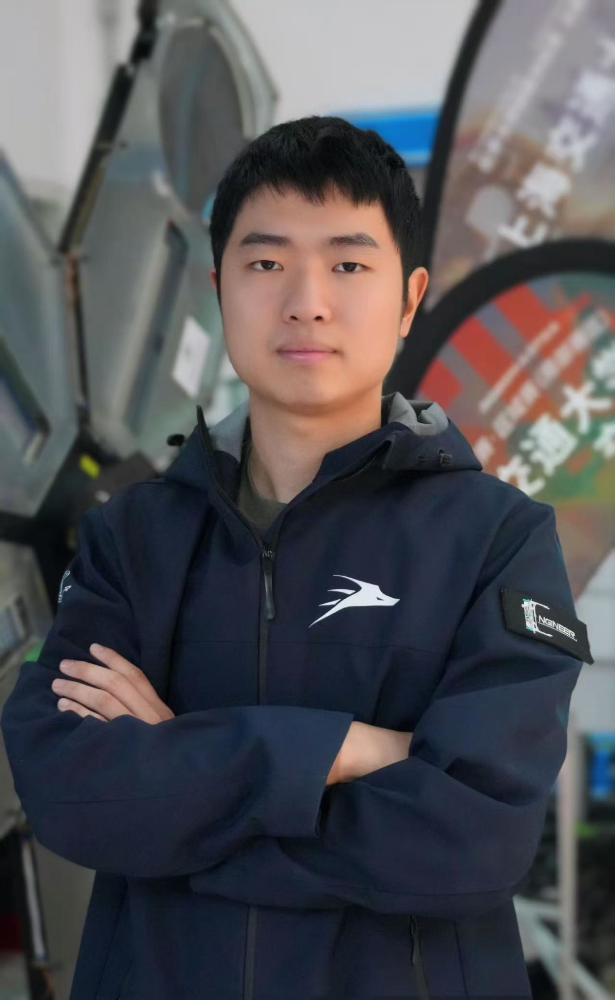
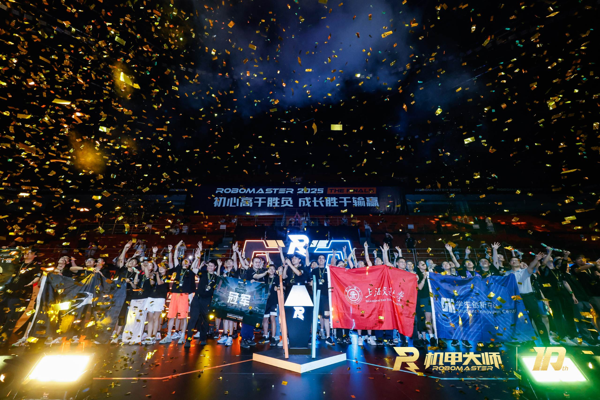

Kaixuan Liu 刘凯暄
I am a third-year undergraduate in Mechanical Engineering at Shanghai Jiao Tong University, enrolled in the Zhiyuan Honors Program. I work with Prof. Cewu Lu and Prof. Chuan Wen in the Machine Vision and Intelligence Group on contact-rich manipulation. Previously, I worked with Prof. Chenkun Qi on quadrupedal locomotion.
I expect to graduate in July 2028 and am seeking summer research opportunities in robot learning and robotics systems.

Education
Shanghai Jiao Tong University
School of Mechanical Engineering
Sep 2024–Present
B.S. in Mechanical Engineering · Expected Jul 2028
Zhiyuan Honors Program

Selected Publications
- Kaixuan Liu, Chenkun Qi, Jinkai Wang, Chengjie Li, Jiaqi Liu, Qiao Sun, Haojie Liu, Jiangwei Zhong.
Learning Adaptive Ladder Climbing for a Quadruped Robot Using Egocentric Vision and Contact-Sensing End Effectors.
IEEE Robotics and Automation Letters (RA-L), under review.
Research & Project Experience
Technical Skills
- Programming
- Python, C, C++
- Manufacturing
- 3D printing, soldering, benchwork
- Engineering Software
- SolidWorks, MATLAB, LabVIEW, ADAMS, EasyEDA
- Robotics & Control
- Embedded systems, manipulator kinematics & dynamics, impedance control
- Learning & Simulation
- ROS 2, Isaac Gym, MuJoCo, Gazebo
- Hardware Platforms
- Unitree Go2, I2RT YAM, NVIDIA Jetson Orin, Intel RealSense
- English Proficiency
- TOEFL iBT 5.5/6 (ETS comparable total: 110/120), .
Awards & Honors
- 2025, 2026Zhiyuan Honors Scholarship
Zhiyuan College, Shanghai Jiao Tong University -
2025
National Champion, RoboMaster University Championship
Team Jiaoloong, Shanghai Jiao Tong University